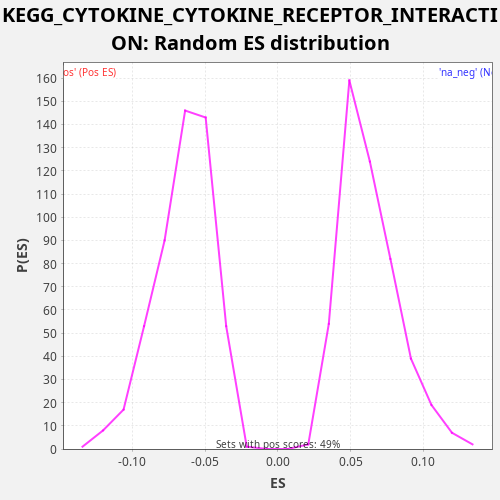

Profile of the Running ES Score & Positions of GeneSet Members on the Rank Ordered List
The same image in compressed SVG format
| Dataset | CCLE |
| Phenotype | NoPhenotypeAvailable |
| Upregulated in class | na_neg |
| GeneSet | KEGG_CYTOKINE_CYTOKINE_RECEPTOR_INTERACTION |
| Enrichment Score (ES) | -0.22566068 |
| Normalized Enrichment Score (NES) | -3.4946074 |
| Nominal p-value | 0.0 |
| FDR q-value | 0.0 |
| FWER p-Value | 0.0 |
| SYMBOL | RANK IN GENE LIST | RANK METRIC SCORE | RUNNING ES | CORE ENRICHMENT | |
|---|---|---|---|---|---|
| 1 | TNFRSF10C | 38 | 4.577 | 0.0039 | No |
| 2 | CSF1R | 132 | 0.851 | 0.0055 | No |
| 3 | CSF2RA | 387 | 0.068 | 0.0003 | No |
| 4 | EDA2R | 548 | 0.031 | -0.0009 | No |
| 5 | IL9R | 694 | 0.016 | -0.0015 | No |
| 6 | CXCL16 | 727 | 0.015 | 0.0027 | No |
| 7 | CCR1 | 814 | 0.012 | 0.0046 | No |
| 8 | HGF | 1079 | 0.006 | -0.0010 | No |
| 9 | FLT3 | 1170 | 0.005 | 0.0007 | No |
| 10 | AMH | 1408 | 0.003 | -0.0038 | No |
| 11 | CXCL14 | 1614 | 0.002 | -0.0069 | No |
| 12 | TNFSF18 | 1649 | 0.002 | -0.0028 | No |
| 13 | CSF2RB | 1934 | 0.001 | -0.0093 | No |
| 14 | CXCR6 | 2072 | 0.001 | -0.0095 | No |
| 15 | PDGFRB | 2191 | 0.001 | -0.0090 | No |
| 16 | IL1R2 | 2391 | 0.001 | -0.0118 | No |
| 17 | TNFSF13 | 2547 | 0.001 | -0.0129 | No |
| 18 | KDR | 2597 | 0.001 | -0.0094 | No |
| 19 | FLT1 | 2721 | 0.001 | -0.0091 | No |
| 20 | PRLR | 2753 | 0.001 | -0.0048 | No |
| 21 | IFNAR1 | 2801 | 0.000 | -0.0013 | No |
| 22 | TNF | 2803 | 0.000 | 0.0042 | No |
| 23 | CCR4 | 2886 | 0.000 | 0.0062 | No |
| 24 | IL7 | 3296 | 0.000 | -0.0055 | No |
| 25 | IL10RB | 3768 | 0.000 | -0.0198 | No |
| 26 | CCL28 | 3972 | 0.000 | -0.0229 | No |
| 27 | TNFSF13B | 4286 | 0.000 | -0.0305 | No |
| 28 | TGFB2 | 4392 | 0.000 | -0.0295 | No |
| 29 | BMPR2 | 4700 | 0.000 | -0.0369 | No |
| 30 | TNFRSF12A | 4709 | 0.000 | -0.0317 | No |
| 31 | IL6 | 4789 | 0.000 | -0.0295 | No |
| 32 | TNFRSF19 | 4838 | 0.000 | -0.0260 | No |
| 33 | IL24 | 4932 | 0.000 | -0.0244 | No |
| 34 | TNFRSF18 | 5263 | 0.000 | -0.0328 | No |
| 35 | IFNAR2 | 5480 | 0.000 | -0.0364 | No |
| 36 | KIT | 6030 | 0.000 | -0.0540 | No |
| 37 | RELT | 6077 | 0.000 | -0.0504 | No |
| 38 | PDGFB | 6118 | 0.000 | -0.0466 | No |
| 39 | VEGFB | 6328 | 0.000 | -0.0499 | No |
| 40 | INHBA | 6592 | 0.000 | -0.0555 | No |
| 41 | IL10RA | 6641 | 0.000 | -0.0520 | No |
| 42 | IL15RA | 6647 | 0.000 | -0.0466 | No |
| 43 | IL15 | 6680 | 0.000 | -0.0425 | No |
| 44 | IFNGR1 | 6973 | 0.000 | -0.0493 | No |
| 45 | CNTF | 7027 | 0.000 | -0.0460 | No |
| 46 | TNFRSF1A | 7768 | 0.000 | -0.0717 | No |
| 47 | TNFSF12 | 7922 | 0.000 | -0.0726 | No |
| 48 | LIF | 7971 | 0.000 | -0.0691 | No |
| 49 | MET | 7992 | 0.000 | -0.0644 | No |
| 50 | IL13RA1 | 8105 | 0.000 | -0.0636 | No |
| 51 | IL1R1 | 8108 | 0.000 | -0.0582 | No |
| 52 | ACVR2A | 8159 | 0.000 | -0.0548 | No |
| 53 | IL6ST | 8435 | 0.000 | -0.0608 | No |
| 54 | PDGFA | 8903 | 0.000 | -0.0750 | No |
| 55 | TGFBR1 | 9132 | 0.000 | -0.0791 | No |
| 56 | LTBR | 9547 | 0.000 | -0.0910 | No |
| 57 | CTF1 | 9754 | 0.000 | -0.0942 | No |
| 58 | AMHR2 | 9870 | 0.000 | -0.0935 | No |
| 59 | GDF5 | 10078 | 0.000 | -0.0967 | No |
| 60 | IL23R | 10126 | 0.000 | -0.0932 | No |
| 61 | TNFRSF17 | 10692 | 0.000 | -0.1115 | No |
| 62 | XCL2 | 10711 | 0.000 | -0.1067 | No |
| 63 | FAS | 11301 | -0.000 | -0.1261 | No |
| 64 | EGF | 11340 | -0.000 | -0.1222 | No |
| 65 | PDGFRA | 11413 | -0.000 | -0.1197 | No |
| 66 | TNFRSF4 | 11495 | -0.000 | -0.1176 | No |
| 67 | PLEKHO2 | 11872 | -0.000 | -0.1279 | No |
| 68 | IL20RB | 12247 | -0.000 | -0.1381 | No |
| 69 | TNFRSF21 | 12596 | -0.000 | -0.1473 | No |
| 70 | IL4R | 12621 | -0.000 | -0.1428 | No |
| 71 | IL12RB1 | 13258 | -0.000 | -0.1641 | No |
| 72 | IL21R | 13282 | -0.000 | -0.1595 | No |
| 73 | LEPR | 13320 | -0.000 | -0.1556 | No |
| 74 | IL2RG | 13498 | -0.000 | -0.1575 | No |
| 75 | CSF3R | 13974 | -0.000 | -0.1720 | No |
| 76 | CCL26 | 14113 | -0.000 | -0.1723 | No |
| 77 | OSMR | 14228 | -0.000 | -0.1716 | No |
| 78 | CD27 | 14428 | -0.000 | -0.1745 | No |
| 79 | KITLG | 14516 | -0.000 | -0.1726 | No |
| 80 | TNFRSF14 | 14597 | -0.000 | -0.1705 | No |
| 81 | TGFB1 | 14624 | -0.000 | -0.1661 | No |
| 82 | IL17RA | 14929 | -0.000 | -0.1734 | No |
| 83 | TNFRSF11B | 14965 | -0.000 | -0.1693 | No |
| 84 | ACVR1B | 15034 | -0.000 | -0.1666 | No |
| 85 | CSF1 | 15384 | -0.000 | -0.1758 | No |
| 86 | TNFRSF9 | 15584 | -0.000 | -0.1787 | No |
| 87 | IL3RA | 15673 | -0.000 | -0.1769 | No |
| 88 | IFNGR2 | 15829 | -0.000 | -0.1779 | No |
| 89 | IL6R | 16144 | -0.000 | -0.1856 | No |
| 90 | TNFRSF10A | 16342 | -0.000 | -0.1884 | No |
| 91 | CLCF1 | 16384 | -0.000 | -0.1846 | No |
| 92 | IFNLR1 | 16573 | -0.000 | -0.1870 | No |
| 93 | CXCR4 | 16625 | -0.000 | -0.1837 | No |
| 94 | EPOR | 16797 | -0.000 | -0.1854 | No |
| 95 | TNFRSF11A | 16861 | -0.000 | -0.1825 | No |
| 96 | CD40 | 17030 | -0.000 | -0.1840 | No |
| 97 | IL18 | 17481 | -0.000 | -0.1975 | No |
| 98 | FLT3LG | 17510 | -0.000 | -0.1932 | No |
| 99 | ACVR2B | 17543 | -0.000 | -0.1890 | No |
| 100 | IL2RA | 17629 | -0.000 | -0.1871 | No |
| 101 | TNFRSF10B | 17895 | -0.000 | -0.1927 | No |
| 102 | LIFR | 18402 | -0.001 | -0.2085 | No |
| 103 | LTA | 18503 | -0.001 | -0.2072 | No |
| 104 | IL2RB | 18722 | -0.001 | -0.2109 | No |
| 105 | PDGFC | 18830 | -0.001 | -0.2099 | No |
| 106 | INHBB | 19205 | -0.001 | -0.2201 | Yes |
| 107 | IL11RA | 19289 | -0.001 | -0.2181 | Yes |
| 108 | TNFSF8 | 19302 | -0.001 | -0.2131 | Yes |
| 109 | IL12A | 19363 | -0.002 | -0.2101 | Yes |
| 110 | MPL | 19367 | -0.002 | -0.2047 | Yes |
| 111 | TNFSF4 | 19384 | -0.002 | -0.1999 | Yes |
| 112 | CCR3 | 19511 | -0.002 | -0.1996 | Yes |
| 113 | TNFRSF13B | 19596 | -0.002 | -0.1977 | Yes |
| 114 | IL17RB | 19626 | -0.002 | -0.1934 | Yes |
| 115 | IL20RA | 19690 | -0.002 | -0.1905 | Yes |
| 116 | TSLP | 19786 | -0.002 | -0.1890 | Yes |
| 117 | XCR1 | 19818 | -0.002 | -0.1848 | Yes |
| 118 | LTB | 20035 | -0.003 | -0.1883 | Yes |
| 119 | TNFRSF10D | 20213 | -0.003 | -0.1903 | Yes |
| 120 | IL7R | 20290 | -0.004 | -0.1880 | Yes |
| 121 | TNFRSF8 | 20296 | -0.004 | -0.1827 | Yes |
| 122 | VEGFD | 20409 | -0.004 | -0.1819 | Yes |
| 123 | ACVR1 | 20447 | -0.004 | -0.1779 | Yes |
| 124 | TNFSF10 | 20568 | -0.005 | -0.1774 | Yes |
| 125 | TNFSF14 | 20680 | -0.005 | -0.1766 | Yes |
| 126 | TNFSF9 | 20768 | -0.006 | -0.1747 | Yes |
| 127 | TGFBR2 | 20973 | -0.008 | -0.1778 | Yes |
| 128 | IL23A | 21022 | -0.008 | -0.1743 | Yes |
| 129 | BMPR1A | 21119 | -0.009 | -0.1728 | Yes |
| 130 | IFNE | 21133 | -0.009 | -0.1679 | Yes |
| 131 | IL11 | 21421 | -0.013 | -0.1744 | Yes |
| 132 | TGFB3 | 21423 | -0.013 | -0.1690 | Yes |
| 133 | TNFRSF13C | 21446 | -0.014 | -0.1644 | Yes |
| 134 | VEGFC | 21546 | -0.016 | -0.1630 | Yes |
| 135 | INHBE | 21553 | -0.016 | -0.1577 | Yes |
| 136 | CCL22 | 21565 | -0.016 | -0.1527 | Yes |
| 137 | TNFRSF25 | 21577 | -0.016 | -0.1476 | Yes |
| 138 | CCL27 | 21752 | -0.021 | -0.1494 | Yes |
| 139 | EGFR | 22003 | -0.031 | -0.1545 | Yes |
| 140 | IL22RA1 | 22034 | -0.033 | -0.1502 | Yes |
| 141 | INHBC | 22041 | -0.033 | -0.1449 | Yes |
| 142 | BMP7 | 22043 | -0.033 | -0.1394 | Yes |
| 143 | GHR | 22092 | -0.036 | -0.1359 | Yes |
| 144 | IL12RB2 | 22093 | -0.036 | -0.1304 | Yes |
| 145 | BMP2 | 22127 | -0.039 | -0.1263 | Yes |
| 146 | CXCL5 | 22132 | -0.039 | -0.1209 | Yes |
| 147 | IL1RAP | 22292 | -0.054 | -0.1221 | Yes |
| 148 | CXCR2 | 22320 | -0.057 | -0.1177 | Yes |
| 149 | XCL1 | 22430 | -0.070 | -0.1168 | Yes |
| 150 | CCR10 | 22440 | -0.072 | -0.1117 | Yes |
| 151 | VEGFA | 22503 | -0.083 | -0.1088 | Yes |
| 152 | CXCL12 | 22543 | -0.093 | -0.1049 | Yes |
| 153 | CXCL10 | 22585 | -0.103 | -0.1011 | Yes |
| 154 | CCL2 | 22656 | -0.125 | -0.0985 | Yes |
| 155 | CXCL11 | 22658 | -0.125 | -0.0930 | Yes |
| 156 | CD70 | 22699 | -0.139 | -0.0892 | Yes |
| 157 | CCR7 | 22896 | -0.236 | -0.0919 | Yes |
| 158 | CNTFR | 22897 | -0.237 | -0.0864 | Yes |
| 159 | IL1A | 22947 | -0.269 | -0.0829 | Yes |
| 160 | TPO | 22958 | -0.275 | -0.0778 | Yes |
| 161 | ACVRL1 | 22967 | -0.284 | -0.0727 | Yes |
| 162 | TNFSF15 | 23031 | -0.337 | -0.0698 | Yes |
| 163 | CCL20 | 23136 | -0.453 | -0.0687 | Yes |
| 164 | CSF2 | 23137 | -0.456 | -0.0631 | Yes |
| 165 | CXCL3 | 23216 | -0.605 | -0.0609 | Yes |
| 166 | IL18R1 | 23271 | -0.753 | -0.0576 | Yes |
| 167 | CCL17 | 23319 | -0.920 | -0.0541 | Yes |
| 168 | CXCL2 | 23385 | -1.182 | -0.0513 | Yes |
| 169 | TNFRSF1B | 23432 | -1.434 | -0.0477 | Yes |
| 170 | TNFRSF6B | 23517 | -2.128 | -0.0458 | Yes |
| 171 | FLT4 | 23587 | -2.895 | -0.0431 | Yes |
| 172 | BMPR1B | 23610 | -3.329 | -0.0385 | Yes |
| 173 | EDA | 23667 | -4.465 | -0.0354 | Yes |
| 174 | NGFR | 23713 | -5.658 | -0.0318 | Yes |
| 175 | CXCL1 | 23717 | -5.911 | -0.0264 | Yes |
| 176 | EDAR | 23722 | -5.999 | -0.0210 | Yes |
| 177 | CXCL8 | 23753 | -7.262 | -0.0167 | Yes |
| 178 | CXCL6 | 23794 | -9.306 | -0.0129 | Yes |
| 179 | IL1B | 23804 | -9.914 | -0.0078 | Yes |
| 180 | CX3CL1 | 23857 | -15.493 | -0.0044 | Yes |
| 181 | CSF3 | 23879 | -33.359 | 0.0002 | Yes |

{kind=link}
{kind=link}